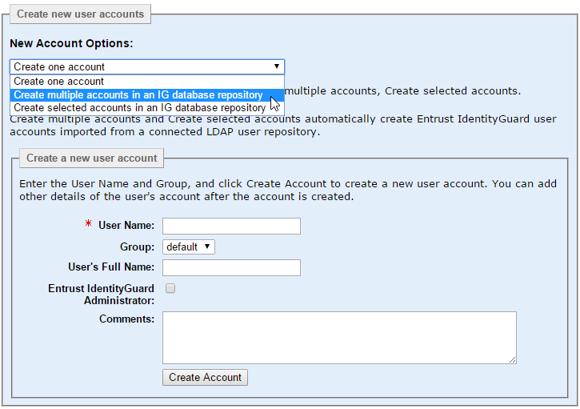
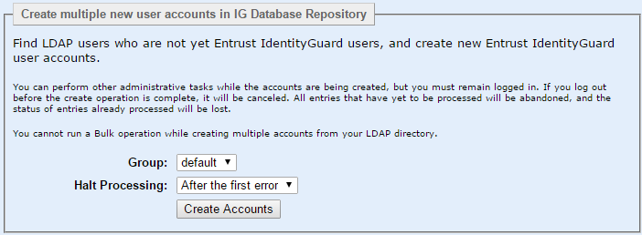
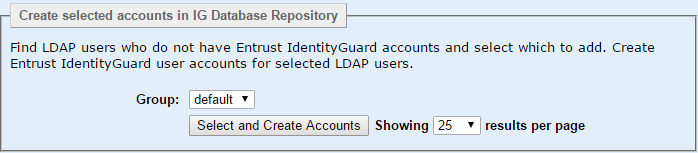
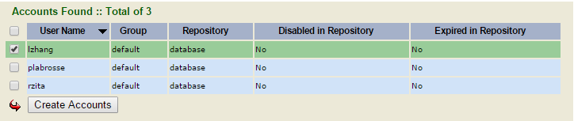

|
IdentityGuard Server 13.0 Administration Guide |
|
IdentityGuard Server 13.0 Administration Guide |
After you complete the configuration steps in this section, use the following procedure to create new Entrust IdentityGuard user accounts in an Entrust IdentityGuard database repository that is synchronized with your LDAP directory user repository.
Note: You must have the userEnrollList permission to complete this procedure.
Note: If you have Entrust IdentityGuard configured to look up user status directly from the LDAP repository, user creation can fail if the user is disabled or expired. For more information, see Suspend disabled and expired LDAP users and Configure user data policies.
Note: Any user accounts created in an Entrust IdentityGuard database that has an LDAP Sync Directory are also synchronized when the user is created. If for some reason synchronization fails (for example, because there is an error accessing the directory), the user creation succeeds, but the user is "orphaned" and that status appears in the user's account details. For more information, see Manage orphaned user accounts.
To create new Entrust IdentityGuard user accounts through synchronization with an LDAP directory
1. Log in to the Entrust IdentityGuard Administration interface as the administrator.
 On the
Windows computer where Entrust IdentityGuard is installed
On the
Windows computer where Entrust IdentityGuard is installed
2. In the main menu, click User Accounts.
The User Accounts page appears.
3. Click the Create Account tab.

4. Under New Account Options, select one of the following options:
● Create one account – to create a single account for a selected LDAP directory user.
● Create multiple accounts in an IG database repository – to create new Entrust IdentityGuard accounts for all users in the LDAP directory that do not already have accounts in the Entrust IdentityGuard database.
Note: Before you use this option, be sure that you have tested any filters that you created to screen out ineligible objects in your LDAP directory.
● Create selected accounts in an IG database repository – to create new Entrust IdentityGuard accounts for selected users in an LDAP directory that do not already have accounts in the Entrust IdentityGuard database. You can specify a search value to potentially narrow down the users that are returned.
Note: All of the New Account Options require that you specify an Entrust IdentityGuard group into which to enroll the new users. When you create groups in Entrust IdentityGuard, you must also specify one or more Entrust IdentityGuard user repositories (databases, in the context of this feature) associated with the group. So, the first thing to ensure is that you have an Entrust IdentityGuard group that is associated with your LDAP sync database. When performing user enrollment you can choose from only the groups that are associated with an LDAP Sync database. When you choose a group, you are indirectly targeting a database as well. For the LDAP synchronization feature, a database can be associated with only one LDAP Sync Directory, so your choice of group also defines the LDAP repository from which you will enroll users. However, if you have a group that is associated with more than one LDAP sync database, when you select such a group, you are prompted to specify which repository you want to use. That choice, in turn, defines which LDAP searchbase you enroll users from.
5. If you selected Create one account, the Create a new user account pane appears. Complete the following steps:
a. Enter the user name for the LDAP directory user. It must match the LDAP directory account name exactly .
b. From the Group drop-down list, select the group into which you want to add the new user. As discussed above, this group is associated with one or more databases that are being used for LDAP synchronization, and because each database can only be associated with only one LDAP repository, this defines \where to look for the LDAP user to enroll. If the group is associated with more than one database, you must specify the database to use (which identifies which LDAP repository to enroll from).
c. Click Create Account.
The account information for the new Entrust IdentityGuard user shows the Initial Sync Time and other sync operational information in addition to the synchronized information from the LDAP directory.
6. If you selected Create multiple new users accounts in an IG database repository, the Create multiple new user accounts in IG Database Repository pane appears. Complete the following steps:

a. From the Group drop-down list, select the group into which to add the new users.
b. If you have configured more than one LDAP Server Directory instance (searchbase) from which to enroll users, they are listed here (below Group). From the Repository drop-down list, select the repository into which to add the new users.
c. From the Halt Processing drop-down list, select one of the following options:
● After the first error — Just one error stops all subsequent operations from being processed.
● For the other options, After 10 errors, After 50 errors, and After 100 errors, the operations that have errors up to the specified number are tracked and not processed. However, all successful operations prior to the specified number of errors threshold are processed. All operations after the processing reaches the maximum number of errors specified are not processed.
d. Click Create Accounts.
Status screens appear, showing the progress of the command.
7. If you selected Create selected accounts in an IG database repository, the Create selected accounts in IG Database Repository pane appears. Complete the following steps:

a. From the Group drop-down list, select the group into which to add the new users.
b. If the group you choose is associated with more than one LDAP Sync database, Entrust IdentityGuard displays a Repository drop-down list. Select the repository into which to add the new users.
c. Select the number of results to show on each page.
d. Click Select and Create Accounts.
The search results page appears, displaying the first page of non-Entrust IdentityGuard users found in the LDAP directory.

Note: If you have multiple LDAP directories configured for synchronization, you see the user records from only one directory at a time. The directory you see users from is based on your group (and if required, Repository) selections. The results from that directory are displayed in groups (pages) based on the number of results per page setting you specified.
e. Select the accounts you want to create in Entrust IdentityGuard, and then click Create Accounts. To select all users listed on the page that is displayed, click the check box to the left of the User Name column heading.
The new accounts are created in the group you specified.
When there are more non-Entrust IdentityGuard users found than can be viewed on the screen, another page of non-Entrust IdentityGuard users appears.
f. Continue, as required, until you have created all the selected users.